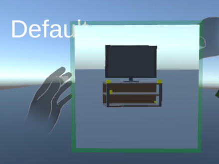

Academic Project
3D UI Project : Multiple Frame Manipulation in VR
Multiple Frame Manipulation in VR is a VR interaction prototype that lets users manipulate distant or occluded 3D objects through user-created frames and a tablet-based 2D interface.

Project Specifications
Context
- 3D User Interfaces / VR interaction project
Role
- Author and developer
Goal
- Develop and evaluate a frame-based VR manipulation technique that enables users to select and move distant or occluded 3D objects without relying on physical walking, reaching, or direct line-of-sight alignment.
Languages
- C#
- Unity
Technologies
- Unity
- Meta Quest 2
- Meta Interaction SDK
- Hand tracking
- Hand pose detection
- Frame-based interaction
- Tablet-based 2D interface
- 2D-to-3D projection
- Ray-plane intersection
- RenderTexture
- Viewpoint capture
- Frame switching
- Single-object manipulation
- Frame-to-frame manipulation
- Lasso-based multi-object selection
- Unity UI Extensions
- NASA-TLX
- SUS-based usability evaluation
Key learnings
- Designing VR interaction techniques for distant object manipulation
- Mapping 2D tablet input into 3D object transformations
- Using user-created viewpoints as reusable interaction frames
- Implementing hand-tracked gesture interaction in Unity
- Supporting both single-object and multi-object manipulation workflows
- Evaluating trade-offs between reduced physical effort and increased cognitive load
Project Description
This project explores how frame-based viewpoints can reduce the need for physical movement in VR. Instead of walking, reaching, or constantly changing position, the user creates portable frames of different scene areas and later uses them as interaction spaces on a tablet interface.
The prototype supports viewpoint creation, frame switching, single-object manipulation, frame-to-frame object movement, and lasso-based multi-object selection. Technically, the system maps 2D tablet input back into the 3D scene using projection-based control, allowing objects to be moved from a mostly stationary position.
The project was also evaluated through user tasks comparing frame-based manipulation with standard direct manipulation. The results showed that the approach helped with distant objects, occluded objects, and multi-object movement, but also introduced extra mental demand, sensitivity to small hand movements, and challenges with precise depth control.